사업담당자를 위한
AION 사업계획 작성 가이드
“새 사업을 등록하고, 계획서를 채우고, 제출한 뒤 내부기안까지 이어가는” 일만 아주 쉽게·아주 자세히 설명합니다. 눌러야 하는 버튼과 화면을 순서대로 따라가면 됩니다.
이 가이드는 무엇을 다루나요?
AION에는 전자문서, 일정, 자료실, 팀관리 등 여러 기능이 있습니다. 이 문서는 그중에서도 사업담당자가 사업계획을 세우는 일만 집중해서 안내합니다.
예시 상황 (이 가이드 전체에서 사용)
AI대학혁신센터 사업담당자 정진수님이
2026년 사업 「AI 기반 대학 연구단지 모델 구축 및 운영」을
새로 등록한다고 가정합니다.
· 재원: 등록금(교비)
· 기간: 2026-03-01 ~ 2026-12-31
· 부모사업(SU-WINGS 예산사업): (국고)대학 박물관 진흥지원 사업 등 예산 코드에 연결
꼭 기억할 한 줄
전체 순서 한눈에 보기
사업담당자가 하는 일을 큰 그림으로 보면 아래 5단계입니다.
- 로그인 — 사번/비밀번호로 접속
- 새 사업 만들기 — 사업관리 → 새 사업 (또는 작성 중인 계획 이어쓰기)
- 작성 방식 선택 — AI 위자드 / 직접 작성 / 기존 사업 불러오기
- ★ 사업분류 선택 (위자드 1단계) — 왼쪽 C1~C5에서 이 사업의 대상·시점·목적·방법을 체크
- 위자드 계속 → 5단계 계획서 완성 — 부모사업·사업명·조건·예산·목적 → 기본정보~검토·제출
- 내부기안 작성 — 제출 직후 뜨는 안내에서 결재 문서 작성으로 이동
1. 로그인하기
그룹웨어에서 쓰는 사번과 비밀번호로 들어갑니다.
로그인 화면에서 사번·비밀번호 입력
- 주소창에
https://suai.cloud또는 대시보드 주소를 엽니다. - 사번 칸에 본인 사번을 입력합니다.
- 비밀번호 칸에 비밀번호를 입력합니다.
- 파란 로그인 버튼을 누릅니다.
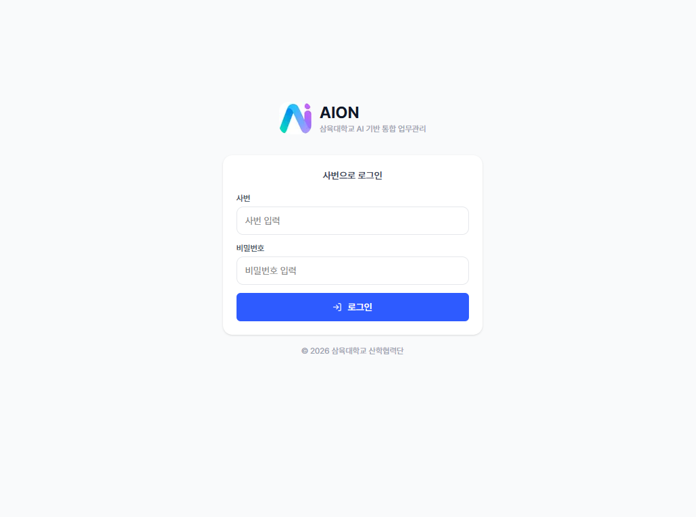
| 화면 요소 | 역할 |
|---|---|
| 사번 입력칸 | 본인 직원 번호를 넣습니다. (그룹웨어 계정과 동일) |
| 비밀번호 입력칸 | 계정 비밀번호를 넣습니다. |
| 로그인 | 인증 후 대시보드로 이동합니다. 실패하면 입력값을 다시 확인하세요. |
2. 대시보드에서 사업계획 시작점 찾기
로그인하면 오늘 할 일, 사업현황, 빠른 실행이 한눈에 보입니다. 사업계획을 새로 쓰려면 왼쪽 메뉴의 사업관리로 가면 됩니다.
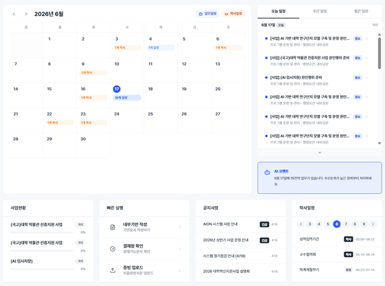
대시보드에서 눈에 둘 곳
| 영역 / 버튼 | 역할 (사업담당자 관점) |
|---|---|
| 사업현황 | 내가 맡은 사업과 단계(예: 계획 0%)를 봅니다. 카드를 누르면 사업 상세로 이동합니다. |
| 내부기안 작성 | 빠른 실행. 결재용 내부기안을 바로 만들 때 사용합니다. (계획서 제출 후 결재할 때 자주 씀) |
| 결재함 확인 | 내가 처리해야 할 결재 문서를 확인합니다. |
| 증빙 업로드 | 지출증빙 등 자료를 올립니다. (계획 단계보다 시행 단계에서 주로 사용) |
| 오늘 일정 / AI 코멘트 | 오늘 마감·중요 일정을 요약해 줍니다. 우선순위를 잡을 때 참고하세요. |
새 사업계획 화면으로 이동
- 왼쪽(또는 하단) 메뉴에서 사업관리를 누릅니다.
- 사업 목록 화면에서 새 사업 또는 생성 버튼을 누릅니다.
(경로 예:
/projects/create) - 이미 쓰다 만 계획이 있으면 작성 중인 사업계획 목록에서 이어서 열 수 있습니다.
정진수 담당자는 대시보드 사업현황에 “박물관 진흥지원”이 계획 0%로 보입니다. 오늘은 신규 사업이므로 메뉴 사업관리 → 새 사업으로 들어갑니다.
3. 작성 방식 고르기 (가장 먼저 결정하는 화면)
새 사업을 누르면 세 가지 카드가 나옵니다. 하나만 고르면 됩니다. 처음이거나 초안이 비어 있으면 AI 사업기획 위자드를 추천합니다.
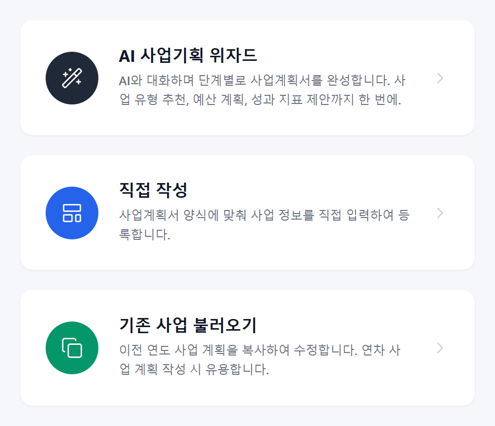
| 카드(버튼) | 언제 쓰나요? | 누르면 어떻게 되나요? |
|---|---|---|
| AI 사업기획 위자드 | 사업 내용이 아직 정리되지 않았을 때. 초안이 필요할 때. | AI와 대화하며 분류·부모사업·사업명·조건·예산·목적까지 채운 뒤, 5단계 편집 화면으로 넘깁니다. |
| 직접 작성 | 이미 사업계획 문구·예산·KPI가 정리되어 있을 때. | 바로 5단계 양식(기본정보~검토제출)으로 들어갑니다. |
| 기존 사업 불러오기 | 작년/유사 사업을 복사해 고칠 때. 연차사업에 유리. | 과거 사업을 골라 복사본을 만든 뒤 수정합니다. |
정진수 담당자는 초안이 없으므로 AI 사업기획 위자드 카드를 클릭합니다.
4. AI 사업기획 위자드 들어가기
AI 사업기획 위자드 카드를 누르면 바로 아래 화면이 열립니다. 가운데 AI가 먼저 이렇게 말합니다.
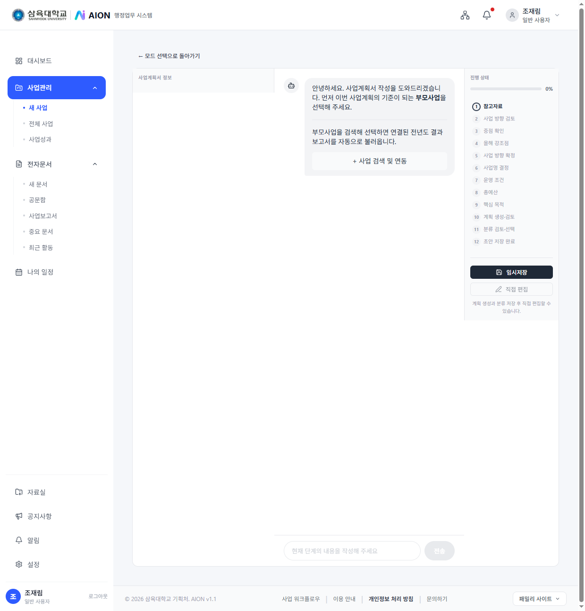
화면 세 칸 역할
| 위치 | 역할 |
|---|---|
| ← 모드 선택으로 돌아가기 | 작성 방식 선택 화면으로 되돌아갑니다. |
| 왼쪽: 사업 분류 선택 | 지금 당장 손댈 곳. C1~C5 아이콘을 누르고 체크박스로 항목을 고릅니다. |
| 가운데: AI 대화창 | 안내 문구·선택 결과 확인. 분류를 고른 뒤에야 본격 대화가 이어집니다. |
| 오른쪽: 진행 상태 / 단계 1~8 | ①분류 선택 → ②부모사업 → … → ⑧편집 전환. 지금은 ①이 켜져 있습니다. |
| 임시저장 | 분류를 일부만 골라도 저장해 둘 수 있습니다. |
| 직접 편집 | 위자드를 건너뛰고 5단계 양식으로 갑니다. (분류는 양식 Step1에서도 다시 고를 수 있음) |
| 아래 입력칸 + 전송 | 분류 단계에서는 보통 비활성/대기. 왼쪽 체크가 본체입니다. |
4-1. 사업분류 선택 — 위자드에서 가장 먼저 하는 일
사업분류는 “이 사업이 누구를 위해, 어떤 환경에서, 언제, 무슨 목적으로, 어떤 방법으로 하는가”를 대학 공통 코드(C1~C5)로 찍는 작업입니다. 나중에 사업 현황·통계·유사사업 추천에도 쓰이므로, 대충 넘기지 않는 것이 좋습니다.
조작 방법 (클릭 순서)
위쪽 C1 ~ C5 아이콘 중 하나를 누른다
아이콘을 누르면 그 분류의 하위 목록이 아래에 펼쳐집니다. 밑줄이 생긴 아이콘이 현재 보고 있는 분류입니다.
- C1 (사람 아이콘) — 대상 1: 내부 및 외부 주체
- C2 (위치 아이콘) — 대상 2: 환경 및 지역 특성
- C3 (달력 아이콘) — 시점 및 주기
- C4 (과녁 아이콘) — 목적: 정책 및 지표 방어
- C5 (톱니 아이콘) — 사업 방법
▶ 화살표를 눌러 폴더를 펼친다
예: C1에서 내부 기본 신분 왼쪽 ▶를 누르면 재학생·교원·직원 등이 나타납니다.
체크박스를 켠다 (여러 개 가능)
해당되는 항목마다 체크합니다. 하나만 고를 필요는 없습니다. 사업에 실제로 해당하는 것을 모두 고르면 됩니다.
다른 C탭으로 이동해 이어서 고른다
대상만 고르고 끝내지 말고, 가능하면 시점(C3)·목적(C4)·방법(C5)까지 맞춰 두면 이후 AI 초안·성과지표 제안 품질이 좋아집니다.
잘못 골랐을 때
- 항목 체크를 다시 끄거나,
- 왼쪽 아래 전체 선택 해제로 현재 보이는 분류의 선택을 비울 수 있습니다.
C1 ~ C5가 각각 무엇인지
| 코드 | 이름 | 질문으로 이해하기 | 주요 하위 항목(예시) |
|---|---|---|---|
| C1 | 대상 1: 내부 및 외부 주체 | 이 사업의 사람(대상)은 누구인가? |
· 내부 기본 신분: 외국인, 신입생, 재학생, 휴학생, 졸업생(미취업), 전임/비전임교원, 강사, 조교, 직원(정규·계약), 외부인 · 학년/과정: 1~4학년, 초과학기, 석·박사, 한국어연수 · 외부 협력 주체: 산업체, 지자체, 교회/교단, 타 대학, 정부부처, 지역사회기관 등 |
| C2 | 대상 2: 환경 및 지역 특성 | 대상이 놓인 환경·지역·상황은? |
· 거주 환경: 기숙사(에덴관·시온관 등), 지역(서울·구리·남양주·경기·지방) · 행정적 특성: SDA 교인, 학사경고자, 미적응자, 리더학생, 가계곤란자, 장애학생, 금연/금주 희망자 등 |
| C3 | 시점 및 주기 | 언제, 얼마나 자주 하는 사업인가? |
· 학사 타임라인: 학기 전 / 학기 초 / 학기 중 / 학기 말 / 방학 중 · 사업 주기: 매일, 매주, 매월, 학기별, 상시, 단회 |
| C4 | 목적: 정책 및 지표 방어 | 이 사업이 지키는·올리는 대학 정책·성과지표는? |
· 대학 정체성: 교인 학생 관리, 선교, ESG, 금연·금주, 인성교육(SU-MVP+) 등 · 국제화 인증(IES): 유학생 체류·중도탈락·TOPIK·의무교육 등 · 학생충원: 재학생 충원율, 신입 충원율, 기숙사 수용률 등 · 교육 및 취업: 취업률, 장학, 교육비 환원, 도서관 인프라 등 |
| C5 | 사업 방법 | 실제로 어떤 수단·프로그램 유형으로 하는가? |
· I. 교육 혁신 및 품질 (전공교육, 교과목 개발·운영 등) · II. 학생 성취 및 성장 · III. 연구 및 산학 협력 · IV. 행정 자원 및 인프라 고도화 (하위는 더 세부적인 방법 코드로 이어집니다) |
예시로 따라 해보기
정진수 담당자가 위자드에 들어오면 이렇게 고를 수 있습니다.
- C1 클릭 → 내부 기본 신분 펼침 → 재학생, 전임교원, 직원(정규직) 체크 (연구지원 부서·교원·학생이 함께하는 사업이므로)
- 필요하면 학년/과정에서 대상 학년을 추가 체크
- C3 클릭 → 학기 중 / 학기별 등 실제 운영 시점에 맞게 체크
- C4 클릭 → 교육·연구·취업 등 이 사업이 기여하는 지표를 체크
- C5 클릭 → III. 연구 및 산학 협력(또는 해당 방법) 하위 항목 체크
- 왼쪽 제목에 「사업 분류 선택 (N개 선택됨)」이 보이면 분류 단계 완료에 가깝습니다.
이 단계에서 보이는 버튼·표시
| 요소 | 역할 |
|---|---|
| C1~C5 아이콘 | 분류 대분류를 바꿉니다. 탭처럼 동작합니다. |
| ▶ / 접기 | 중분류·소분류 목록을 펼치거나 접습니다. |
| 체크박스 | 해당 분류를 이 사업에 포함시킵니다. 여러 개 선택 가능. |
| 전체 선택 해제 | 지금 보고 있는 쪽 선택을 한꺼번에 비웁니다. |
| 「N개 선택됨」 | 지금까지 체크한 분류 개수. 고를수록 숫자가 올라갑니다. |
| 오른쪽 ① 분류 선택 | 이 단계가 끝나야 진행률이 올라가고 ② 부모사업으로 넘어갑니다. |
4-2. 사업분류 다음 — 위자드 나머지 단계
분류(①)를 마치면 가운데 대화창에서 ②→⑧ 순서로 이어집니다. 오른쪽 단계 목록에서 지금 어디인지 항상 확인할 수 있습니다.
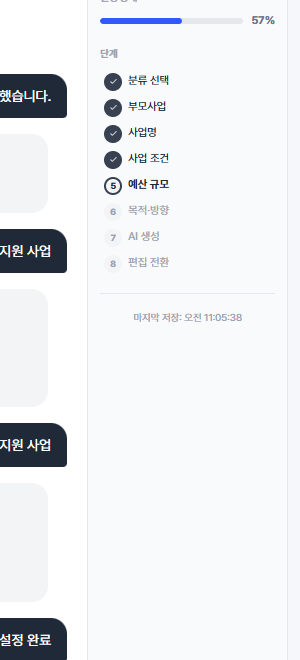
부모사업 선택
부모사업은 SU-WINGS에 있는 예산 사업입니다. AION에서 만드는 실행 사업(자식사업)은 부모사업 하나에 연결됩니다.
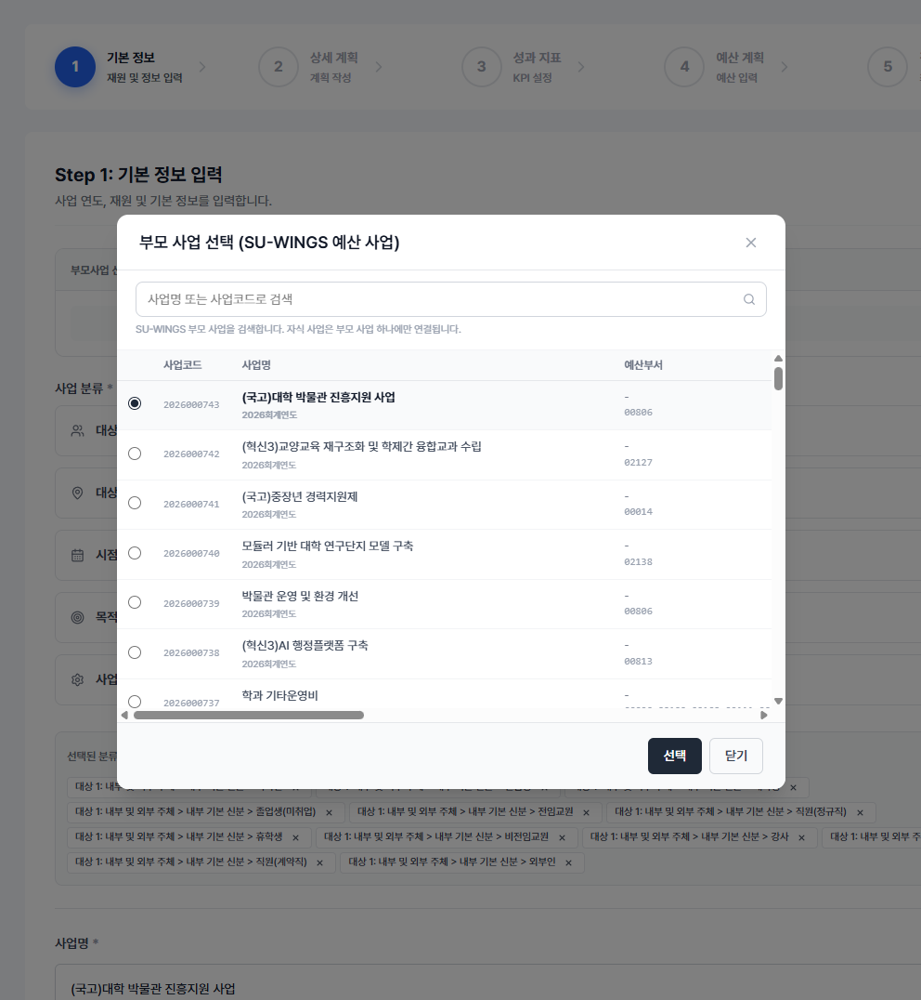
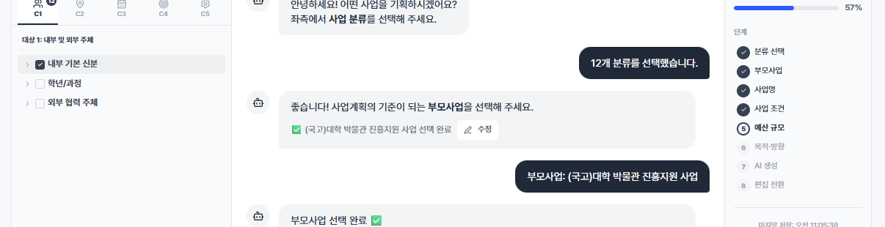
- AI가 “계획의 기준이 되는 부모사업을 선택해 주세요”라고 안내합니다.
- 목록·검색에서 SU-WINGS 예산사업을 고릅니다.
- 선택되면 「… 선택 완료」 카드가 뜨고, 대화에 부모사업명이 기록됩니다.
- 잘못 골랐으면 카드 옆 수정을 눌러 다시 고릅니다.
| 버튼·표시 | 역할 |
|---|---|
| 검색칸 | 사업명 또는 사업코드로 부모사업을 찾습니다. |
| 목록 라디오/행 | 연결할 예산사업을 고릅니다. (자식 1개당 부모 1개) |
| 선택 | 고른 부모사업을 확정합니다. |
| 닫기 | 팝업만 닫습니다. |
| 수정 | 이미 고른 부모사업을 바꿉니다. |
부모사업: (국고)대학 박물관 진흥지원 사업 선택 완료
사업명 정하기
부모사업 선택 직후, AI가 사업명을 선택하거나 직접 입력하라고 안내합니다.
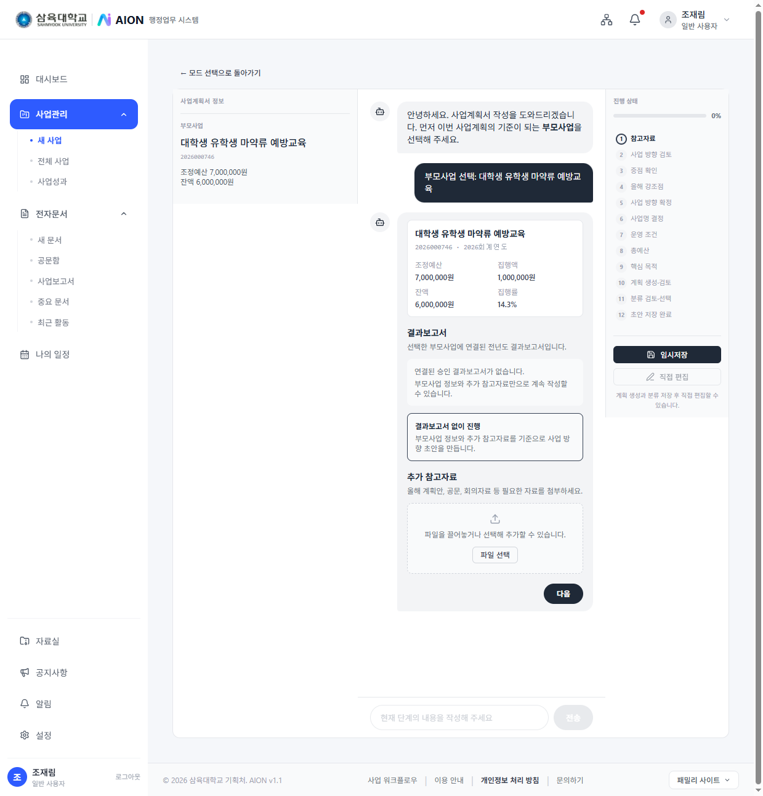
- AI 안내: 「사업명을 선택하거나 직접 입력해 주세요.」
- 부모사업명과 같게 쓰거나, 실행 단위에 맞게 더 구체적인 이름을 넣습니다.
- 확정되면 오른쪽 말풍선(또는 완료 표시)으로 사업명이 기록됩니다.
- 바꾸려면 수정을 누릅니다.
| 버튼·표시 | 역할 |
|---|---|
| 이름 카드/선택지 | AI·시스템이 제안한 사업명을 고릅니다. |
| 직접 입력 | 원하는 사업명을 키보드로 입력합니다. |
| 수정 | 확정한 사업명을 다시 고칩니다. |
| 전송 | 입력칸에 적은 사업명을 AI에게 보냅니다. |
부모와 동일: 「(국고)대학 박물관 진흥지원 사업」
또는 실행명으로 바꿔 쓰기: 「AI 기반 대학 연구단지 모델 구축 및 운영」
사업 조건 설정
사업명 설정이 끝나면, 회색 박스 안에서 재원·부서·기간·원인행위·대상을 입력합니다.
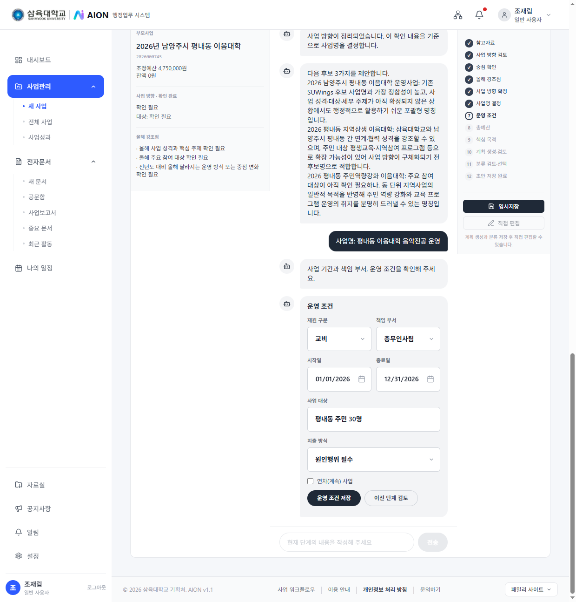
- AI가 「사업명 설정 완료 → 사업 조건을 설정해 주세요」라고 안내합니다.
- 회색 박스에서 아래 항목을 채웁니다.
- 재원 구분 * — 드롭다운에서 선택 (예: 등록금)
- 책임 부서 * — 드롭다운에서 선택
- 시작일 / 종료일 * — 달력으로 기간 지정
- 지출원인행위 구분 — 「원인행위 필수」 또는 「고정비(의무지출)」
- 사업 대상 * — 예: 전체 재학생, 교직원 등
- 입력을 마치면 요약 카드로 조건이 정리되어 보입니다. 틀리면 수정으로 다시 고칩니다.
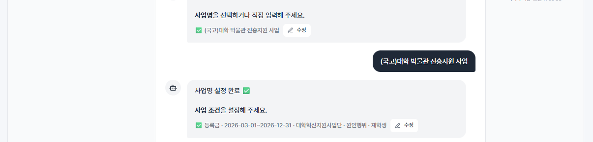
그림 9-1. 조건 입력 후 요약 표시 — 재원 · 기간 · 부서 · 원인행위 · 대상 + 「수정」
| 입력 항목 | 역할 |
|---|---|
| 재원 구분 * | 예: 등록금(교비), 국고 등. 필수. |
| 책임 부서 * | 사업을 맡은 부서/사업단. 필수. |
| 시작일 / 종료일 * | 사업 수행 기간. 필수. |
| 지출원인행위 구분 | 원인행위 필수 / 고정비(의무지출) 중 선택. |
| 사업 대상 * | 누가 참여·혜택을 받는지. 예: 재학생, 교직원. |
| 수정 | 요약 확정 후 조건을 다시 고칠 때. |
등록금 · 2026-03-01~2026-12-31 · 대학혁신지원사업단 · 원인행위 · 재학생
예산 규모 선택
이 자식사업의 총예산을 AI 제안 카드에서 고르거나 직접 입력합니다. 이후 Step2에서 P/D로 나누고, Step4에서 계정과목으로 쪼갭니다.
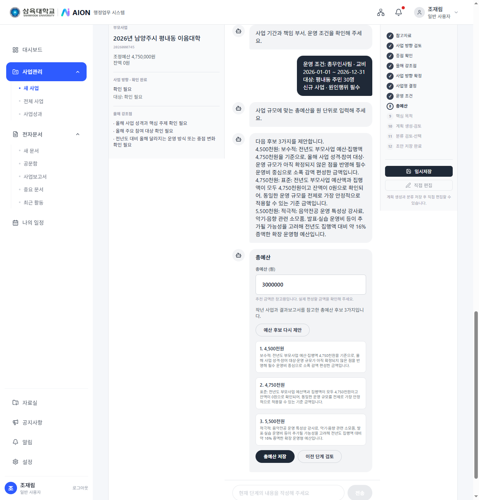
| 버튼 | 역할 |
|---|---|
| 예산 카드 (보수적·표준·적극적·최대) | AI가 제안한 총액 구간을 고릅니다. 카드 설명이 범위 안내입니다. |
| 다시 제안받기 | 예산 제안 카드를 새로 받습니다. |
| 직접 입력 | 카드에 없는 금액을 직접 적습니다. |
보수적 2,000만 / 표준 4,000만 / 적극적 7,000만 / 최대 1억 중 선택하거나, 실제 편성에 맞게 직접 입력(천원). 이후 2단계 P/D 금액과 4단계 계정과목으로 이어집니다.
목적·방향 → AI 생성
⑥에서 사업의 핵심 목적을 고르거나 직접 입력하고, 연차사업 여부를 답한 뒤 AI 계획서 생성 시작을 누르면 ⑦에서 AI가 개요·추진계획·성과지표·예산 등 계획서 초안을 만듭니다.
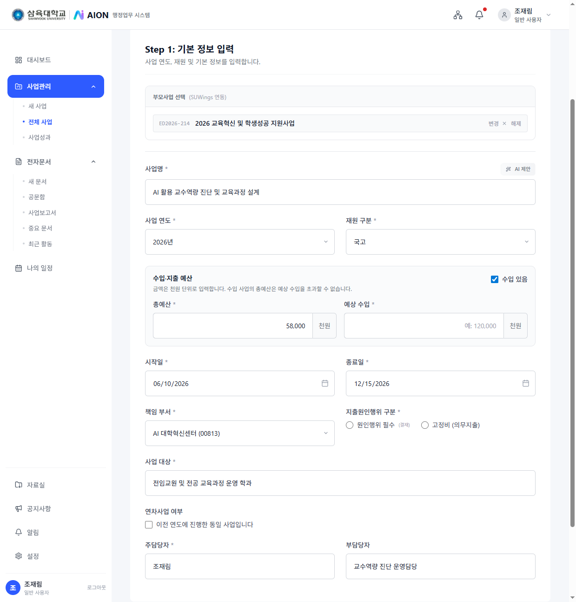
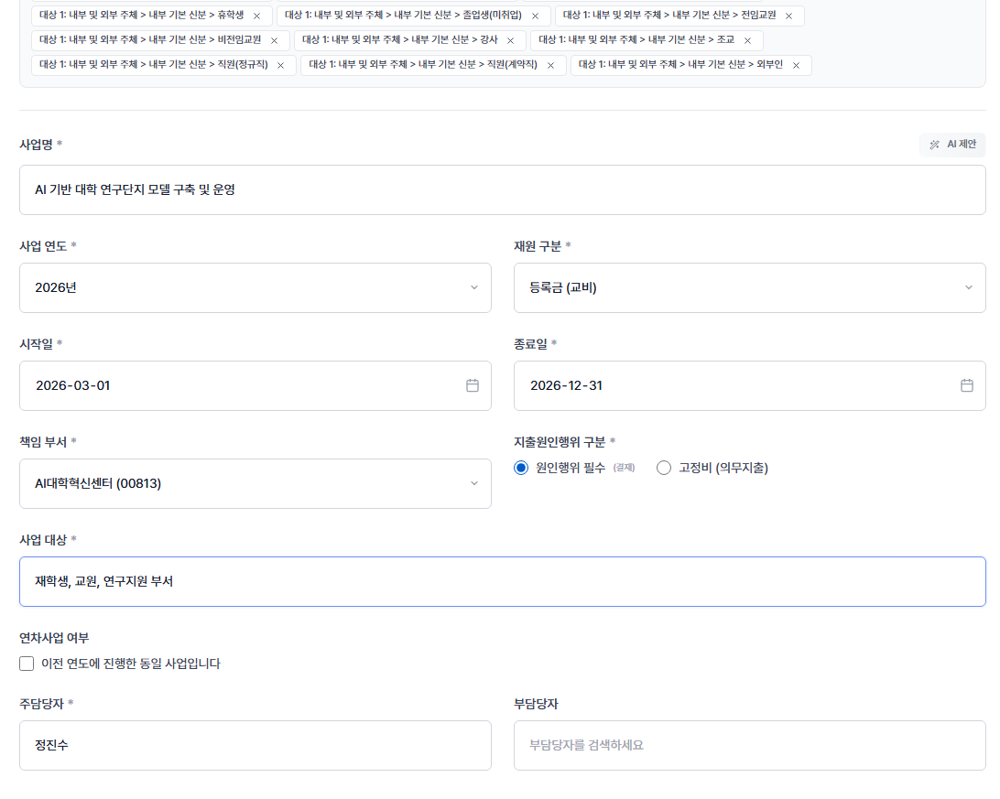
| 여기서 하는 일 | 설명 |
|---|---|
| 확인 | 부모사업·분류·사업명·기간·부서·원인행위·담당자가 AI/위자드 입력과 같은지 봅니다. |
| 수정 | 틀린 값·빠진 값을 고칩니다. (변경/해제, 분류 태그 X, AI 제안, 드롭다운·날짜 등) |
| 임시저장 | 검수 중간에 저장합니다. |
| 다음 > | Step2 상세계획으로 넘어가 본문도 이어서 확인하고 수정합니다. |
| 오른쪽 직접 편집 | 위자드 중간에서도 이 편집 화면으로 바로 올 수 있습니다. |
5. 상세 계획 · 추진계획(PDCA) 작성
Step2(상세 계획)에서는 먼저 개요·목적·추진 방법을 채우고, 이어서 추진 계획을 PDCA로 구체화합니다.
개요 · 목적 · 추진 방법
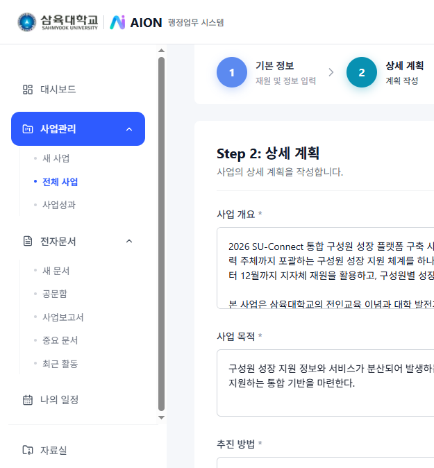
| 항목 | 쓰는 요령 | 예시 방향 |
|---|---|---|
| 사업 개요 * | 누가·무엇을·언제·어떻게 하는 사업인지 전체 그림. 2~4문단. 추진 배경·필요성도 여기에 함께 씁니다. |
대상·기간·부서·부모사업 연계 + 왜 필요한지 |
| 사업 목적 * | 이 사업으로 달성하려는 상태. “왜”가 아니라 “무엇을 이룰지”. | “~위험을 예방하고 ~체계를 전환한다” |
| 추진 방법 * | 어떻게 실행할지(방식·절차·협업). AI가 비워 둔 경우가 많음 → 직접 작성. | 교육·홍보·운영·점검 등 실행 절차 |
추진 계획 — PDCA로 쓰기
추진 계획의 각 행에는 PDCA 구분이 있습니다. 단순 일정 나열이 아니라, 계획(P) → 운영/시행(D) → 평가(C) → 성과·환류(A) 흐름으로 실제 업무와 기안이 보이도록 써야 합니다.
이후에 일정에 변경이 생기면 수정할 수 있습니다. 따라서 최대한 자세하게 작성해야 합니다.
P 계획 (Plan)
착수 전·준비 단계. “무엇을 준비·승인받을지”
- 사업계획서 작성·승인
- 원인행위 (기안·결재)
- 사업 준비 (인력·일정·공간)
- 입찰 / 계약 준비
- 설계 / 요구분석 / 범위 확정
- 보안·개인정보 검토 등
D 운영·시행 (Do)
실제 실행. “무엇을 돌리고 진행할지”
- 홍보 · 안내 · 모집
- 교육·프로그램 운영
- 공사·구축·개발 진행
- 시범 운영 · 운영자 교육
- 서비스 오픈 · 현장 지원
C 평가 (Check)
점검·측정. “잘 됐는지 어떻게 볼지”
- 만족도 조사
- 준공검사 · 검수
- 공정평가 · 중간점검
- 성과지표(KPI) 측정
- 오류·접근성·피드백 수집
A 성과·환류 (Act)
개선·공유. “다음을 어떻게 바꿀지”
- 성과보고회
- 환류 방향 설정
- 성과공유회
- 개선 반영 · 매뉴얼 정비
- 차년도 고도화 계획
한 줄(활동 행)에 넣을 것
| 열 | 작성 요령 |
|---|---|
| PDCA | 위 네 단계 중 하나. 같은 단계라도 활동이 다르면 행을 나눕니다. |
| 기간 | 시작일~종료일. Step1 사업 기간 안에 들어오게. |
| 행정요건 | 없음 / 행정위원회 / 혁신운영위원회 / 내부공문 / 기타 — 실제 필요한 절차를 선택. |
| 원인행위 | 예산 사용 근거 기안이 필요하면 「필수」 체크. |
| 금액 | P(계획)·D(실행) 행에만 입력합니다. 단위는 천원. C(평가)·A(환류)는 보통 비웁니다. P 합 + D 합이 자식사업 총예산과 같아야 다음으로 갑니다. |
| 내용 | 누가 봐도 알 수 있게 구체적으로. “사업 진행” X → “운영자 교육 및 시범 서비스 운영” O |
P 03/01–15 사업계획·착수공문 → 03/16–31 요구조사 → 04/01–20 승인·원인행위 기안 → 04/21–05/15 설계 → 05/16–31 준비·입찰
D 06/01–20 홍보 → 06/21–08/31 구축·개발 → 09/01–15 운영자 교육 → 09/16–10/15 시범 운영
C 10/16–31 피드백·오류점검 → 11/01–15 만족도·KPI → 11/16–25 준공검수·공정평가
A 11/26–12/05 개선·환류 → 12/06–15 성과보고·공유회 → 12/16–31 차년도 계획
계획 예산 현황 — 금액을 P/D에만 나누기
추진계획 화면 위(또는 옆)에 계획 예산 현황 카드가 있습니다. 자식사업 총예산을 먼저 잡고, 그 돈을 활동 행의 기간별로 P 계획 / D 계획에만 나눕니다.
화면 예시. 「P와 D 계획에만 금액을 입력합니다. 두 단계 금액 합계가 총예산과 일치해야 다음 단계로 이동할 수 있습니다.」
| 카드 | 뜻 |
|---|---|
| 총예산 | 이 자식사업의 전체 예산. 위자드·기본정보에서 잡은 총액입니다. |
| P 계획 | Plan(준비·기안·설계·입찰) 행에 적어 둔 금액의 합. |
| D 계획 | Do(홍보·구축·운영 등 실행) 행에 적어 둔 금액의 합. |
| 남은 예산 | 총예산 − (P 계획 + D 계획). 0천원이 되어야 합니다. |
총예산 50천원 · P 계획 0천원 · D 계획 50천원 · 남은 예산 0천원
→ 실행(D)에만 예산을 쓰는 사업입니다. P 행이 있어도 금액이 0이면 Step4 Plan 표는 비워도 됩니다.
P에 설계비 10천원, D에 공사비 40천원을 나누는 식으로 써도 됩니다. 합만 50이면 됩니다.
기대효과 · 대학발전계획 연계 · 첨부 파일
추진계획(PDCA) 아래에는 기대효과, 대학발전계획 연계, 첨부 파일이 이어집니다.
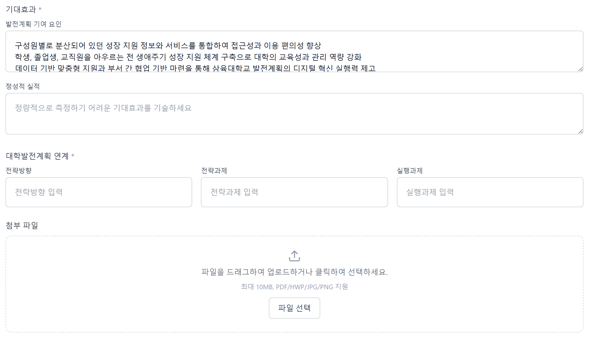
기대효과 *
사업이 끝나면 어떤 변화가 생기는지를 적습니다. 화면에는 발전계획 기여 요인과 정성적 실적 두 칸이 있습니다.
| 항목 | 쓰는 요령 |
|---|---|
| 발전계획 기여 요인 | 이 사업이 대학 발전·전략에 어떻게 도움이 되는지를 구체적으로 적습니다. “도움이 된다”보다 누가·무엇이·어떻게 좋아지는지를 문장으로 나눕니다. |
| 정성적 실적 | 숫자(정량 지표)로 재기 어려운 기대효과를 적습니다. 문화·인식·체계·협업·품질처럼 서술로만 설명 가능한 성과를 담습니다. |
· 유학생이 국내 마약류 관련 법규와 위험성을 명확히 이해하여 안전한 대학생활 기반이 강화된다.
· 입학팀 중심의 예방교육 운영 데이터가 축적되어 유학생 관리체계의 선제적 대응 역량이 향상된다.
· 삼육대학교의 건강한 공동체 고유 가치에 부합하는 캠퍼스 안전문화가 확산된다.
· 예방교육 참여 후 “위험 상황을 구분하고 신고·상담 경로를 안다”는 인식이 높아진다.
· 부서 간 교육 운영 절차가 정리되어, 담당자가 바뀌어도 동일한 품질로 교육을 이어갈 수 있다.
· 유학생·교직원이 안전 이슈를 함께 다루는 분위기(캠퍼스 안전문화)가 형성된다.
대학발전계획 연계 *
첨부 파일
이 사업을 설명·증빙하는 자료를 올립니다. (드래그 또는 파일 선택, 최대 10MB, PDF/HWP/JPG/PNG)
- 계약서·용역 과업지시서·견적서 등 사업 수행 근거
- 이전 연도·유사 사업 계획서·결과보고·환류 자료
- 교육 교안, 운영 매뉴얼, 공문, 협약서 등 사업을 이해하는 데 필요한 참고 자료
Step2를 마치면 다음 >로 Step 3(성과 지표)로 이동합니다.
6. Step 3 — 성과 지표(KPI) 설정
Step 3에서는 사업이 끝난 뒤 Check(평가)에서 달성 여부를 확인할 목표를 정합니다. 본문은 정량 지표 카드 목록이고, 추가·수정은 성과지표 수정 창에서 합니다. 창에서 등록 방식을 두 가지 중 하나로 고릅니다.
| 등록 방식 | 언제 쓰나 | 창에서 하는 일 |
|---|---|---|
| 평가/성과관리지표 | 대내외 성과관리 지수에 직접 기여하는 사업 | 성과관리지수를 고른 뒤 지표명 · 단위 · 목표값 입력 |
| 연계지표 | 직접 실적으로 올리기 어렵고 성과체계를 보조하는 사업 | 내부·외부 성과체계를 고른 뒤 지표명 · 단위 · 목표값 · 연계 설명 |
본문 — 정량 지표 목록
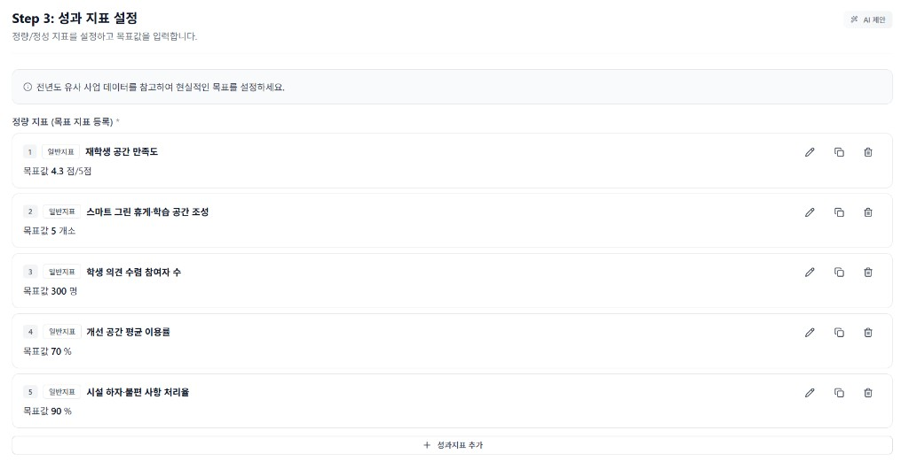
| 화면 요소 | 역할 |
|---|---|
| AI 제안 | 정량 지표 초안을 받습니다. 받은 뒤 반드시 검수합니다. |
| 지표 카드 | 번호 · 일반지표 배지 · 지표명 · 목표값. 예: 재학생 공간 만족도 / 4.3 점/5점 |
| 연필 · 복사 · 휴지통 | 수정 창 열기 · 복제 · 삭제 |
| + 성과지표 추가 | 빈 항목을 만들고 수정 창에서 내용을 채웁니다. |
성과지표 수정 창 — 평가/성과관리지표
사업이 대학의 대외·내부 성과관리 지수에 직접 기여하면 왼쪽 카드를 고릅니다. 지수를 선택한 뒤 지표명·단위·목표값만 입력하면 됩니다.
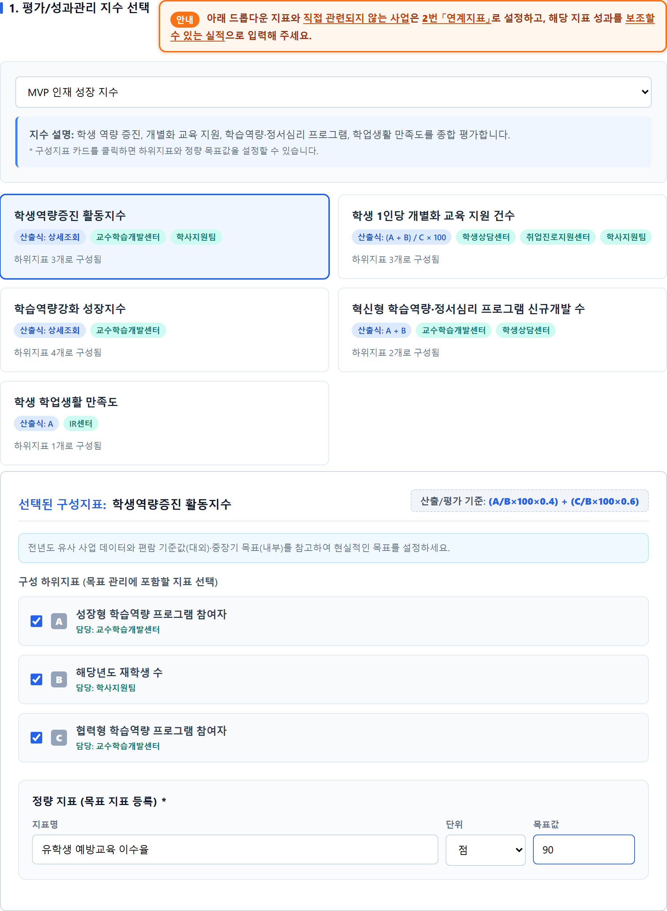
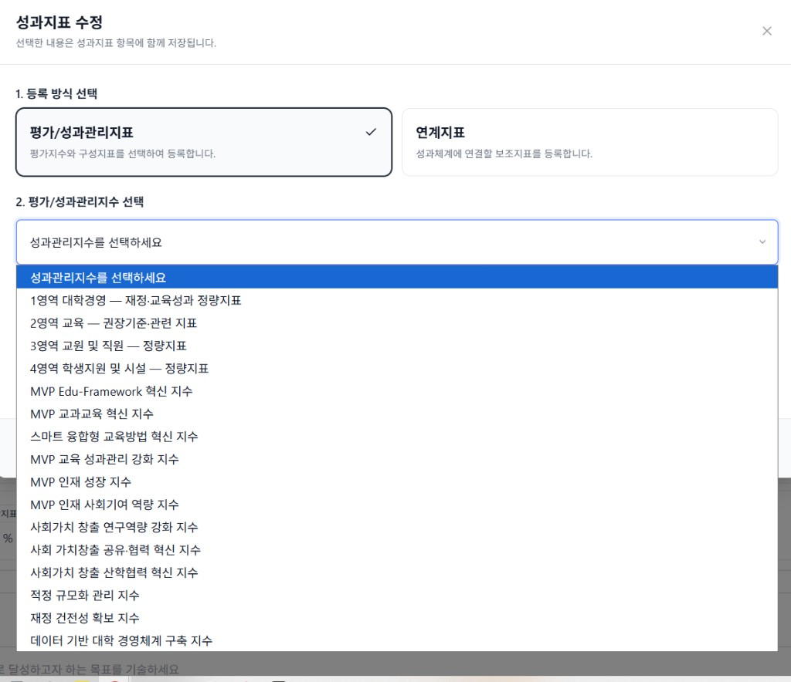
| 단계 | 하는 일 |
|---|---|
| 1. 등록 방식 | 「평가/성과관리지표」를 선택합니다. (평가지수와 구성지표를 선택하여 등록) |
| 2. 성과관리지수 | 드롭다운에서 지수를 고릅니다. 목록은 아래 표와 같습니다. |
| 3. 성과지표 입력 | 지표명 · 단위(명/%/점 등) · 목표값. 하단 수정 완료 |
성과관리지수 목록
| 구분 | 선택지 |
|---|---|
| 대외 기관평가인증 |
1영역 대학경영 — 재정·교육성과 정량지표 2영역 교육 — 권장기준·관련 지표 3영역 교원 및 직원 — 정량지표 4영역 학생지원 및 시설 — 정량지표 |
| 내부 중장기발전계획 |
MVP Edu-Framework 혁신 지수 · MVP 교과교육 혁신 지수 · 스마트 융합형 교육방법 혁신 지수 · MVP 교육 성과관리 강화 지수 · MVP 인재 성장 지수 · MVP 인재 사회기여 역량 지수 · 사회가치 창출 연구역량 강화 지수 · 사회 가치창출 공유·협력 혁신 지수 · 사회가치 창출 산학협력 혁신 지수 · 적정 규모화 관리 지수 · 재정 건전성 확보 지수 · 데이터 기반 대학 경영체계 구축 지수 |
지수: MVP 인재 성장 지수
지표명: 재학생 공간 만족도 · 단위: 점 · 목표값: 4.3
성과지표 수정 창 — 연계지표
드롭다운 지수에 직접 실적값으로 올리기 어려운 사업이 사용합니다. 대학의 내부·외부 성과체계에 연결할 보조 지표를 등록합니다.
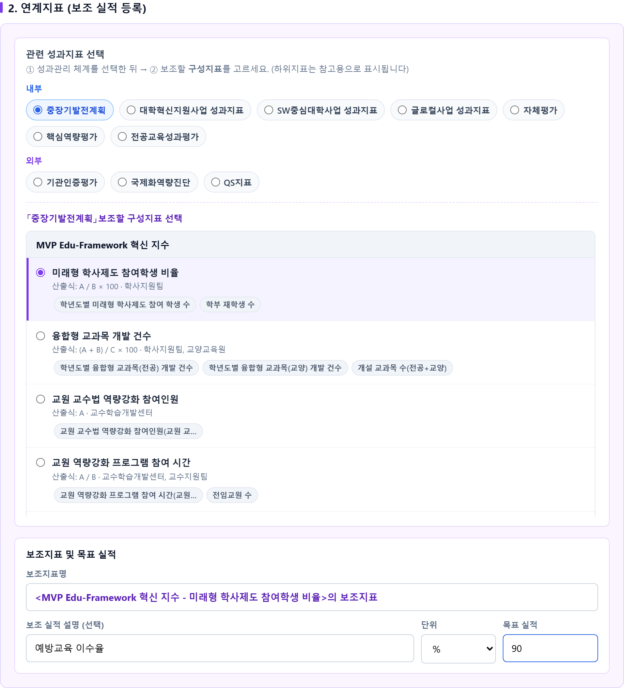
| 단계 | 하는 일 |
|---|---|
| 1. 등록 방식 | 「연계지표」를 선택합니다. (성과체계에 연결할 보조지표를 등록) |
| 2. 연계 성과체계 | 내부·외부 태그 중 연결할 체계를 고릅니다. |
| 성과지표 입력 | 지표명 · 단위 · 목표값 · 연계 설명(선택). 지표명과 목표값은 필수. |
| 구분 | 선택 항목 |
|---|---|
| 내부 성과체계 | 중장기발전계획 · 대학혁신지원사업 성과지표 · SW중심대학사업 성과지표 · 글로컬사업 성과지표 · 자체평가 · 핵심역량평가 · 전공교육성과평가 |
| 외부 성과체계 | 기관인증평가 · 국제화역량진단 · QS지표 |
체계: 내부 · 중장기발전계획
지표명: 학생 의견 수렴 참여자 수 · 단위: 명 · 목표값: 300
연계 설명: 공간 조성 과정에서 재학생 수요를 반영해 발전계획 학생지원 성과를 보조
② 간접 서포트가 분명하지 않으면 등록하지 마세요.
화면에서 입력하는 순서
- AI 제안 또는 + 성과지표 추가로 항목을 만듭니다.
- 카드의 연필을 눌러 성과지표 수정 창을 엽니다.
- 대내외 지수에 직접 기여하면 「평가/성과관리지표」 → 지수 선택 → 지표명·단위·목표값.
- 직접 기여가 아니면 「연계지표」 → 내부·외부 성과체계 선택 → 지표명·단위·목표값·연계 설명.
- 수정 완료 후 목록에서 목표값을 확인하고 임시저장 → 다음 >로 Step 4(예산)로 이동합니다.
하단 공통 버튼 (Step 전체에서 동일)
| 버튼 | 역할 |
|---|---|
| < 이전 | 바로 전 Step으로 돌아갑니다. 입력값은 보통 유지됩니다. |
| 삭제 | 이 사업계획(초안) 자체를 삭제합니다. 복구가 어려울 수 있으니 신중히. |
| 임시저장 | 현재까지를 저장하고 나중에 이어서 작성합니다. 제출은 아닙니다. |
| 다음 > | 다음 Step(예산)으로 이동합니다. 필수 정량 목표가 비면 막아 줄 수 있습니다. |
7. Step 4 — 예산 소요 계획 (P/D 계정과목 편성)
예전에 SU-WINGS에서 따로 작성하던 예산서를 이제 이 화면에서 사업계획과 함께 작성합니다. 2단계에서 나눈 P 계획 / D 계획 금액에 맞춰, Plan 표와 Do 표에 계정과목 · 예산신청내용 · 산출근거 · 신청예산(천원)을 각각 적습니다.
① 자식사업 총예산을 잡는다 → ② Step2 추진계획에서 기간별 P/D 금액으로 나눈다 (P합+D합=총예산) → ③ Step4에서 P·D 각각 계정과목 산출내역으로 쪼갠다 (P편성=P계획, D편성=D계획) → ④ 자식사업 총액의 합이 부모사업 예산액과 같아야 한다.
AION에서 작성하는 사업은 대개 세부사업(자식사업)입니다. 자식사업 예산을 느슨하게 쓰면 부모사업(SU-WINGS) 전체 예산도 흔들립니다.
기존(계속) 사업이라면 지난해 사업 지출 총금액을 기준으로 예산을 짜세요. 신규 사업은 추진계획(PDCA)·과업 규모에 맞춰 산출근거를 분명히 두고 산정합니다.
화면 위 — 예산 편성 현황
| 카드 | 뜻 · 맞춰야 하는 것 |
|---|---|
| 총예산 | 자식사업 총액 (Step2와 동일) |
| P 편성 / 계획 | Plan 표 합계 / Step2 P 계획. 두 숫자가 같아야 초록(편성 완료) |
| D 편성 / 계획 | Do 표 합계 / Step2 D 계획. 역시 같아야 다음 단계 |
| 전체 편성 차이 | 편성 합 − 총예산. 0천원이어야 합니다 |
Plan 표 · Do 표를 따로 쓰는 이유
- Plan · 계획 계정과목 편성 — 원인행위 기안, 설계, 입찰 준비처럼 P 단계 비용
- Do · 실행 계정과목 편성 — 공사·프로그램 운영·물품 구입처럼 D 단계 비용
- P 계획이 0천원이면 Plan 표는 「편성된 계정과목이 없습니다」여도 됩니다
- 각 표에서 계정과목 추가 / 빈 행 추가로 행을 늘립니다
한 행에 넣을 것
| 열 | 작성 요령 |
|---|---|
| 계정과목 | 드롭다운에서 선택. 예: 교원각종수당, 소모품비, 시설비, 스마트 그린공간 조성 등 |
| 예산신청내용 | 무엇을 위해 쓰는지 한 줄로. 예: 「벤치, 테이블, 파라솔 등 체류형 편의시설 설치」 |
| 산출근거 | 단가 × 수량 × 횟수처럼 계산식이 보이게. 비워 두지 않는 것이 좋습니다 |
| 신청예산 (천원) | 원 단위가 아니라 천원. 50,000원이면 50 |
스마트 그린공간 조성 22천원 + 휴게·편의 시설 12천원 + 스마트 조경·안전 6천원 +
학생 참여·의견수렴 4천원 + 유지관리·성과관리 6천원 = 50천원
화면 안내: 「계획 50천원 · 편성 50천원 · 편성 완료」
8. Step 5 — 검토하고 제출하기
마지막 확인 화면입니다. 내용을 한 번 더 본 뒤 제출합니다.
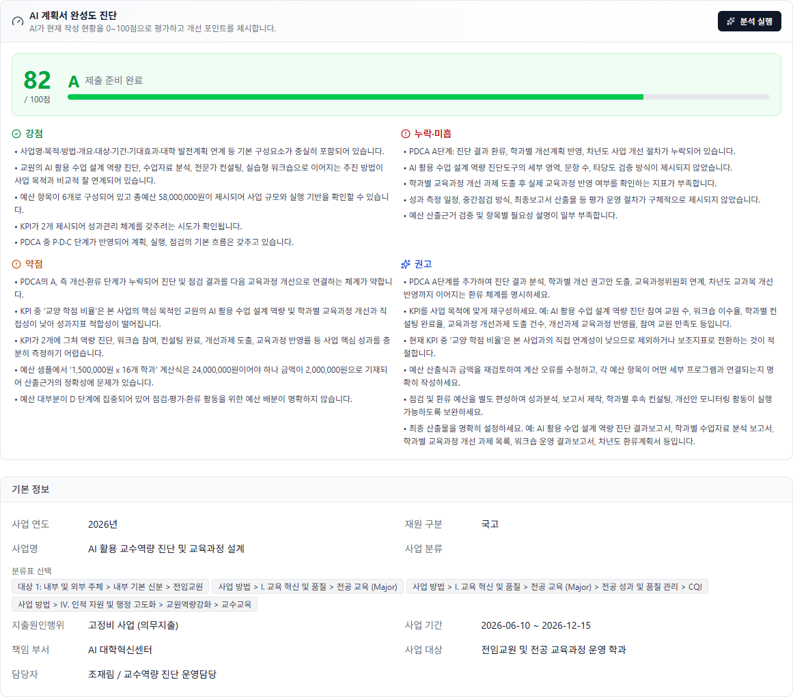
제출 전 체크리스트
- 요약된 사업명·기간·부서·담당자가 맞는지 확인합니다.
- (권장) 분석 실행을 눌러 AI 완성도 진단을 봅니다. 점수가 낮으면 이전 Step으로 돌아가 보완합니다.
- 상세계획·성과지표·예산 요약도 스크롤하며 확인합니다.
- 문제가 없으면 화면의 제출 버튼(검토 완료 후 제출)을 누릅니다.
| 버튼 | 역할 |
|---|---|
| 분석 실행 | AI가 계획서 완성도를 0~100점으로 평가하고 개선 포인트를 제안합니다. 제출을 강제하지는 않지만 강력 추천. |
| < 이전 | 예산 단계로 돌아가 수정합니다. |
| 임시저장 | 아직 제출하지 않고 저장만 합니다. |
| 제출 (검토 완료 후) | 사업계획서를 제출합니다. 이후 내부기안 안내 창이 뜹니다. |
9. 제출 직후 — 내부기안 작성으로 이어가기
제출에 성공하면 안내 창이 뜹니다. 사업계획 “작성”은 여기서 끝나지만, 승인을 받으려면 내부기안을 이어서 써야 합니다.
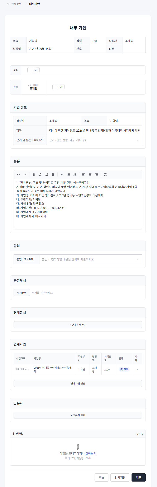
| 버튼 | 역할 · 언제 누르나 |
|---|---|
| 상세로 이동 | 제출된 사업 상세 화면으로 갑니다. 내용을 다시 보거나 나중에 기안할 때. |
| 내부기안 작성 | 바로 결재 올리려면 이것을 누르세요. 사업계획 승인용 내부기안 작성 화면으로 이동합니다. 작성 후 그룹웨어에서 결재가 진행됩니다. |
제출 창에서 내부기안 작성 클릭 → 제목·본문·결재선 확인 → 그룹웨어 상신 → 결재 완료되면 AION 사업 상태가 “진행 가능(승인)” 쪽으로 갱신됩니다.
제출 후 사업 상세에서 확인할 것
내부기안을 아직 안 썼다면, 사업 상세 상단에 노란 안내와 버튼이 남아 있습니다.
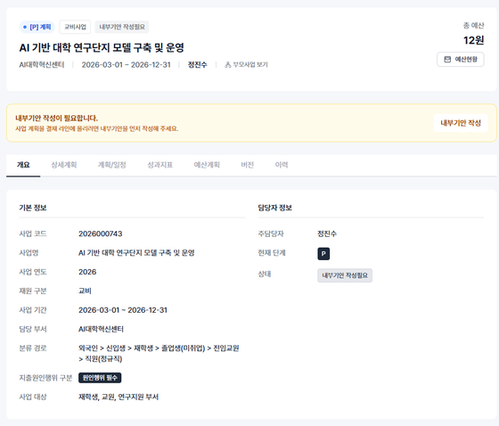
| 화면 요소 | 의미 |
|---|---|
| 배지 [P] 계획 | 지금 사업이 계획(Plan) 단계라는 뜻입니다. |
| 내부기안 작성필요 | 아직 결재용 내부기안이 없거나 미완료 상태입니다. |
| 노란 배너의 내부기안 작성 | 여기서도 바로 기안 작성으로 들어갈 수 있습니다. |
| 탭: 개요 / 상세계획 / 계획·일정 / 성과지표 / 예산계획 / 버전 / 이력 | 제출한 내용을 탭별로 다시 확인합니다. |
| 부모사업 보기 | 연결된 SU-WINGS 예산사업을 확인합니다. |
| 예산현황 | 편성·집행·잔액 참고 화면으로 이동합니다. |
실수 줄이는 실무 팁
- 자주 임시저장 — 긴 문장은 중간에 저장하세요.
- 부모사업 먼저 — 예산 연결 없이 본문만 쓰면 나중에 다시 맞추느라 시간이 듭니다.
- AI는 초안 — 사업명·KPI·예산·본문은 담당자가 최종 확인합니다.
- 제출 ≠ 승인 — 제출 후 반드시 내부기안 결재까지 가세요.
- 숫자 일치 — Step2 P+D = 총예산, Step4 P편성=P계획·D편성=D계획, 자식 합계 = 부모사업 예산. 단위는 천원.
이 시스템의 다른 기능 (간단 안내)
사업계획 외 기능은 필요할 때만 보면 됩니다. 역할만 짧게 정리합니다.
전자문서 / 결재함
내부기안·공문 작성, 결재 대기 처리. 사업 승인·수정·결과보고도 여기 결재와 연결됩니다.
일정(캘린더)
사업 추진일정·마감을 달력으로 봅니다. 대시보드 AI 브리핑과도 연결됩니다.
자료실
영수증·결과물 등 증빙 업로드. 시행(Do) 단계에서 자주 사용합니다.
사업성과 / 연관도 / 분류현황
진행·성과 모니터링, 사업 간 관계, 분류체계별 현황을 보는 화면입니다.
팀 업무 관리
팀원별 담당 사업 배분·현황을 봅니다. 팀장·센터장에게 유용합니다.
알림 · 공지 · 조직도
결재요청·반려·마감 알림, 시스템 공지, 조직 구조를 확인합니다.
결과보고서 (평가 단계)
사업이 끝나면 AI 초안을 활용해 결과보고를 쓰고 결재합니다. 계획 단계 이후 이야기입니다.
사업 수정(버전)
승인된 뒤 예산 등 크게 바꾸면 Major 수정 + 수정 내부기안이 필요합니다. 작은 문구는 Minor로 바로 저장될 수 있습니다.
자주 묻는 질문
Q. 임시저장만 했는데 사업이 승인되나요?
아니요. 제출하고 내부기안 결재 승인까지 받아야 합니다.
Q. 부모사업을 꼭 연결해야 하나요?
예산·집행을 사업과 같이 보려면 연결하는 것이 맞습니다. SU-WINGS 예산사업을 부모로 둡니다. 자식 사업들의 총액 합이 부모사업 예산 안에서 맞아야 합니다.
Q. 예산은 어디에 얼마를 넣나요?
자식 총예산 → 2단계에서 P·D에만 금액(합계=총예산) → 4단계에서 P표·D표로 계정과목 쪼개기(각 표 합계=그 단계 계획액). C·A는 금액이 없습니다. 단위는 천원입니다.
Q. AI가 써 준 내용을 그대로 내도 되나요?
초안용입니다. 사실관계·예산·일정·성과지표는 담당자가 수정·확정해야 합니다.
Q. 직접 작성과 AI 위자드 중 무엇을 고르나요?
초안이 없으면 AI 위자드, 이미 문서가 있으면 직접 작성, 작년 사업 재사용이면 기존 불러오기.
Q. 지출청구도 AION에서 끝나나요?
아닙니다. AION은 사업 맥락·문서 연결·증빙 관리 중심이고, 실제 예산·청구는 SU-WINGS/그룹웨어 흐름을 따릅니다.
한 장 요약 — 사업담당자 체크리스트
- 로그인한다
- 사업관리 → 새 사업을 연다
- 작성 방식을 고른다 (보통 AI 위자드)
- ★ 왼쪽에서 사업분류(C1~C5)를 먼저 체크한다
- 부모사업(예산)을 연결한다
- 기본정보·상세계획·KPI·예산을 채운다 (총액 → P/D 금액 → 계정과목, 숫자 일치)
- 자주 임시저장한다
- Step5에서 검토·(가능하면) AI 분석 후 제출한다
- 내부기안 작성을 눌러 결재를 올린다
- 승인될 때까지 사업 상세 상태를 확인한다